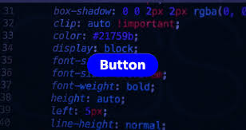

CSS is an important technology in the frontend development as it governs the look of a website or application. If you don't include CSS, Web pages would look flat and disorganized. With CSS, plain HTML designs turn into chic, responsive interfaces that feature contemporary designs and interactive aspects. CSS is used every day by frontend developers for better typography, colors, spacing, responsiveness, animation, and user experience.
CSS is used in conjunction with HTML and JavaScript. HTML: It provides structure, CSS: It adds to the design, and JavaScript: It provides interactivity.
Cascading Style Sheets is called CSS. By using selectors and properties, CSS can be used to style elements on a webpage and make it look good. To make it easier for developers to create responsive designs for desktop, tablet, and cell, CSS helps.
body{
background:black;
color:white;
}
Styled Text Example
The use of CSS colors enhances branding systems and webpage aesthetics. HEX color codes, RGB systems, gradients and opacities are used by developers.
h1{
color:skyblue;
}
This heading is styled using color: skyblue; to show how CSS color values work.
Use of font sizes, spacing, line height, font families, and text alignment systems improves readability. Professional typography enhances user experience and accessibility.
h1{
font-size:50px;
font-weight:bold;
}
Spacing is regulated by CSS box model which has margin, borders, and padding, and content areas. The box model is a very important concept to grasp when building responsive layouts and systems of space.
div{
padding:20px;
margin:20px;
border:2px solid white;
}
Flexbox is an efficient way to build responsive horizontal and vertical layouts. Flexbox is a development tool used by designers to arrange elements and groups of elements on webpages.
CSS Grid is a new feature that allows for more sophisticated responsive layouts with rows and columns. Using grid systems helps to make websites more organized and responsive.
The animations enhance the interactivity and user involvement. This includes support for transitions, transforms, keyframes, hover effects and movement systems.
Responsive design enables websites to be flexible when viewed on a range of devices and screen sizes. Responsive systems are crucial in modern frontend development due to the widespread use of mobile, tablet, laptop, and desktop devices to access websites.
@media(max-width:768px){
h1{
font-size:30px;
}
}
CSS is crucial because users need to see how things are going to look and it can have a significant impact on the business. In today's world, UI and UX design play a vital role for companies as it creates eye-catching websites that enhance customer engagement and usability. CSS enhances brand consistency, responsiveness, layout systems and accessibility.
Frontend developers leverage CSS to develop a professional dashboard, ecommerce sites, learning systems, entertainment websites, and interactive interfaces.
There are quite a number of important properties that are available for styling the webpages professionally in CSS.
Colors enhance aesthetics & branding systems.
Typography is the way that text is presented and makes it easier to read.
Flexbox is an efficient way to make responsive layouts.
Animations enhance interaction and engagement.
Be it an eye-catching layout or a responsive interface, CSS enhances websites in a variety of ways. CSS is used by the developers to enhance spacing, typography, colour systems, interactive elements, shadows, animation and responsive behaviour. Responsive design systems are beneficial for improvement accessibility and usability of web across devices.

Ecommerce systems, educational systems, banking systems, entertainment websites, dashboards, portfolio systems and social media applications use CSS. Frontend frameworks and UI libraries are also essential to modern UI styles, as they rely heavily on CSS styling systems.
CSS is important in large companies for consistency of branding and a professional user experience across digital platforms.
Css skills can be greatly improved through practice. Developers further enhance themselves with styling knowledge by designing layout, creating animation, responsive system, and design components.
body{
background:#111827;
color:white;
font-family:Poppins;
}
h1{
color:skyblue;
}